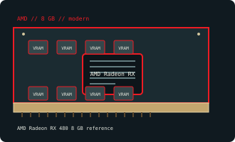

[ AMD // INDIVIDUAL GPU RECORD ]
AMD Radeon RX 480 8 GB reference
2016; GCN 4 Polaris 10; 2,304 stream processors.

Recorded specifications
| Catalog identity | AMD Radeon RX 480 8 GB reference |
|---|---|
| Model-specific specification | 2016; GCN 4 Polaris 10; 2,304 stream processors; 8 GB GDDR5, 256-bit; PCIe 3.0 x16; 150 W; reference 6-pin. |
| Vendor-first catalog | AMD vendor directory |
| Model-family index | AMD / ATI vendor directory |
Compatibility and maintenance
8 GB reference card; partner/4 GB layouts vary and RX 580 BIOS is not interchangeable. Check PCB code, power plug and original VBIOS before repair.
Sources & further reading
- TechPowerUp Radeon RX 480 specificationsModel/family technical or historical reference; confirm the exact board revision and OEM label.